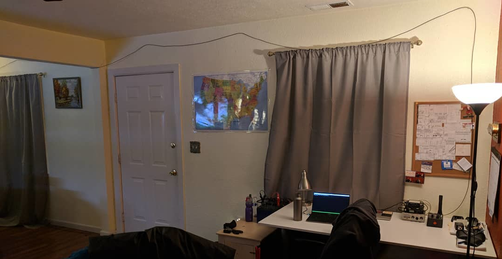
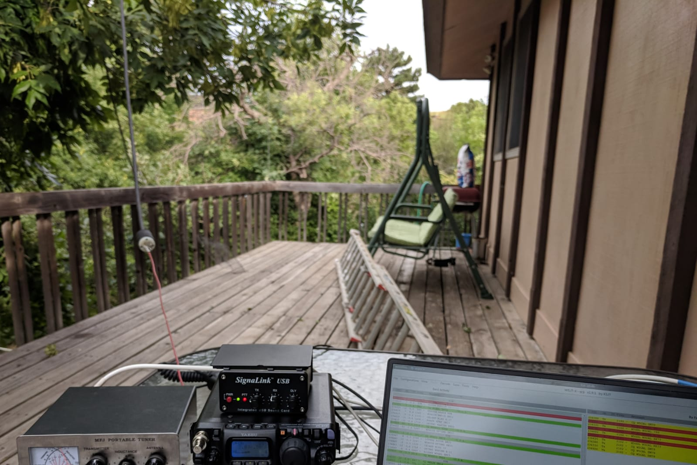
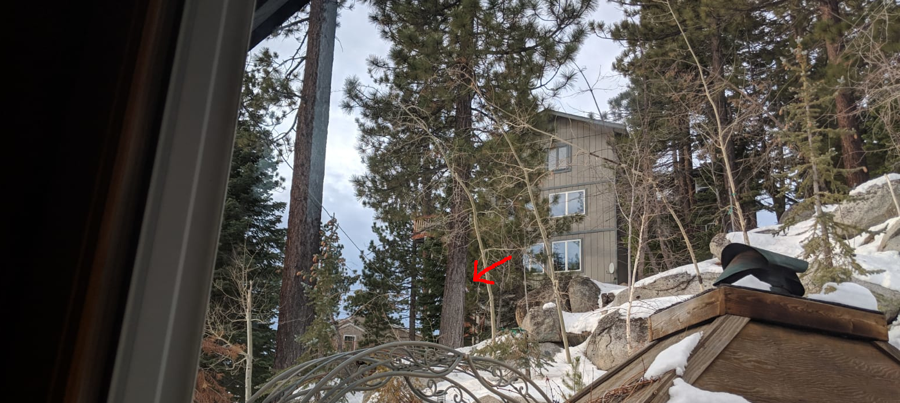

So far, I've just been having fun seeing how well FT8 can work on random wire
antennas with low power. It's amazing how little you can get away with.

30m QSL with Vancouver on this with 1W. The counterpoise on the
floor isn't visible.

40m QSL with Florida from Boulder CO, with 4W into an extension
cord thrown up in a tree. The ladder is the counterpoise.

40m QSL with Japan from South Lake Tahoe with 20W on this random
wire. There are five ground radials not visible.